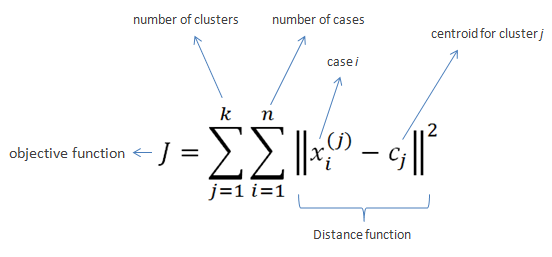

| Map > Data Mining > Predicting the Future > Modeling > Clustering > K-Means | |||
K-Means Clustering |
|||
| K-Means clustering intends to partition n objects into k clusters in which each object belongs to the cluster with the nearest mean. This method produces exactly k different clusters of greatest possible distinction. The best number of clusters k leading to the greatest separation (distance) is not known as a priori and must be computed from the data. The objective of K-Means clustering is to minimize total intra-cluster variance, or, the squared error function: | |||
|
 |
|||
| Algorithm | |||
|
|||
| K-Means is relatively an efficient method. However, we need to specify the number of clusters, in advance and the final results are sensitive to initialization and often terminates at a local optimum. Unfortunately there is no global theoretical method to find the optimal number of clusters. A practical approach is to compare the outcomes of multiple runs with different k and choose the best one based on a predefined criterion. In general, a large k probably decreases the error but increases the risk of overfitting. | |||
| Example: | |||
| Suppose we want to group the visitors to a website using just their age (a one-dimensional space) as follows: | |||
| 15,15,16,19,19,20,20,21,22,28,35,40,41,42,43,44,60,61,65 | |||
| Initial clusters: | |||
| Centroid (C1) = 16 [16] Centroid (C2) = 22 [22] |
|||
| Iteration 1: | |||
| C1 = 15.33 [15,15,16] C2 = 36.25 [19,19,20,20,21,22,28,35,40,41,42,43,44,60,61,65] |
|||
| Iteration 2: | |||
| C1 = 18.56 [15,15,16,19,19,20,20,21,22] C2 = 45.90 [28,35,40,41,42,43,44,60,61,65] |
|||
| Iteration 3: | |||
| C1 = 19.50 [15,15,16,19,19,20,20,21,22,28] C2 = 47.89 [35,40,41,42,43,44,60,61,65] |
|||
| Iteration 4: | |||
| C1 = 19.50 [15,15,16,19,19,20,20,21,22,28] C2 = 47.89 [35,40,41,42,43,44,60,61,65] |
|||
| No change between iterations 3 and 4 has been noted. By using clustering, 2 groups have been identified 15-28 and 35-65. The initial choice of centroids can affect the output clusters, so the algorithm is often run multiple times with different starting conditions in order to get a fair view of what the clusters should be. | |||
|
|||